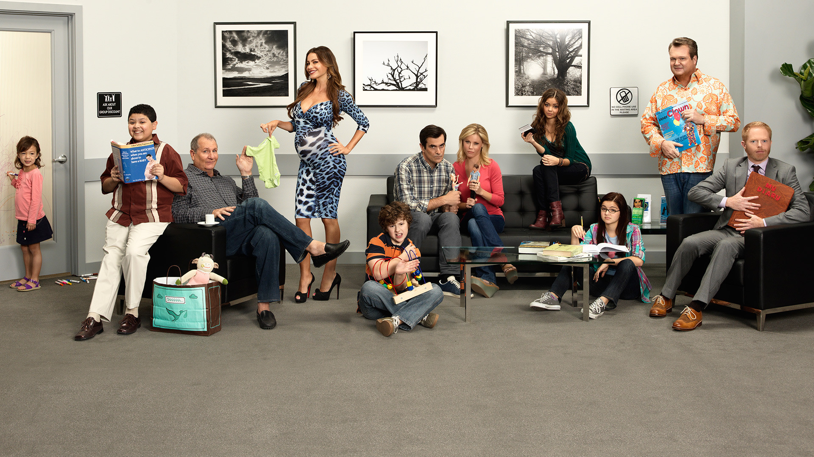

Merhaba. Ben Gülşah. Balıkesir'de yaşıyorum. Bilgisayar Mühendisliğinden mezun oldum. Web geliştirme alanı ile ilgileniyorum. Yeni şeyler öğrenmeyi seviyorum. Animasyon izlemeyi ve puzzle yapmayı seviyorum.
Modern Family
Modern Family : Pritchett, Dunphy ve Pritchett-Tucker ailelerinin günlük yaşantılarından manzaralar sunan Modern Family dizisinin konusu, bu üç ailenin ekseninde dönüyor. Aile bağlarını, hayatta karşımıza çıkan sorunlara karşı geliştirdiğimiz çözümleri, farklı karakterlerin ortak bir yaşam kurma noktasında birlikte nasıl davranabileceğini gözler önüne seriyor.